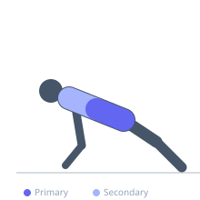
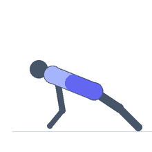

Exercise guide / TRX Fallout
TRX Fallout
A TRX-based anti-extension core exercise in which the exerciser holds the TRX handles and falls forward, extending the arms overhead while keeping the core rigid and preventing the hips from dropping. The TRX adds a suspension element that requires the shoulder girdle and core to work together to control the forward fall. This is a suspension-based analogue to the ab wheel rollout and is used in core stability and anti-extension training.
Primary muscles
transverse abdominis
rectus abdominis
Secondary muscles
latissimus dorsi
deltoid anterior
erector spinae
Stabilizers
triceps long head
Equipment
No Equipment (Bodyweight)


Starting position
- Adjust TRX straps to fully shortened position. Hold the handles and face away from the anchor point. Lean forward at an angle, with arms extended forward at chest height. Body is in a rigid plank position.
Setup
- More forward lean = harder. Begin with a small lean angle (less than 30 degrees) and progress the lean as strength improves.
Steps
- Step 1: Hold the TRX handles and lean forward into the starting position, body rigid.
- Step 2: Allow the arms to fall forward and overhead while keeping the body in a rigid plank — no hip drop or lumbar arch.
- Step 3: Reach the furthest overhead position that you can hold without the hips dropping.
- Step 4: Pull the arms back to the starting position by engaging the lats and core. Repeat.
Coaching cues
- Squeeze the glutes before you start and keep them squeezed throughout — this prevents the hip drop
- Think of the return as a lat pulldown, not an arm pull
- The further you lean forward, the harder this becomes — start conservative
Breathing
- Inhale as you fall forward and overhead. Exhale forcefully as you pull back.
Range of motion
- Extend as far overhead as the core can hold the plank position. The hips must not drop.
Tempo
- 3s fallout to overhead, 1s hold, 2s pull back.
Common mistakes
- Hips sagging as the arms extend overhead — this is the most common fault and reduces core training
- Using the arms to push back rather than the core and lats to pull back
- Using a body angle (lean) that is too steep too soon
Safety
- Ensure the TRX anchor can support the full bodyweight load in the extended position
- If lower back pain occurs during the fallout, reduce the lean angle significantly
Training
- strength: 5–10 reps
- strength: 2–3 sets
- Rest: {'strength': 60}